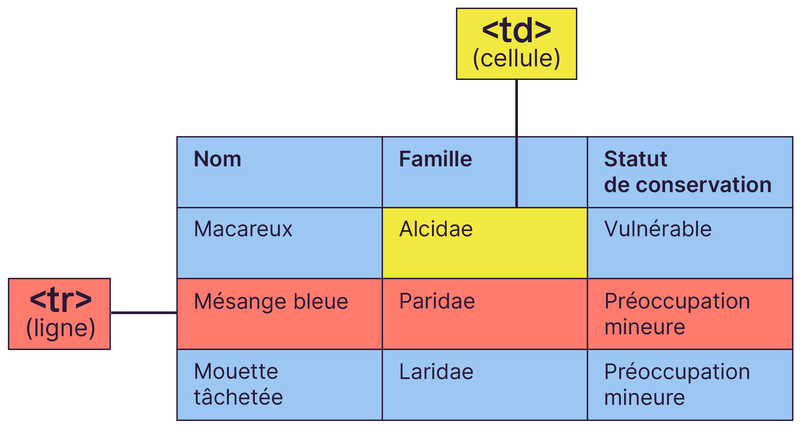
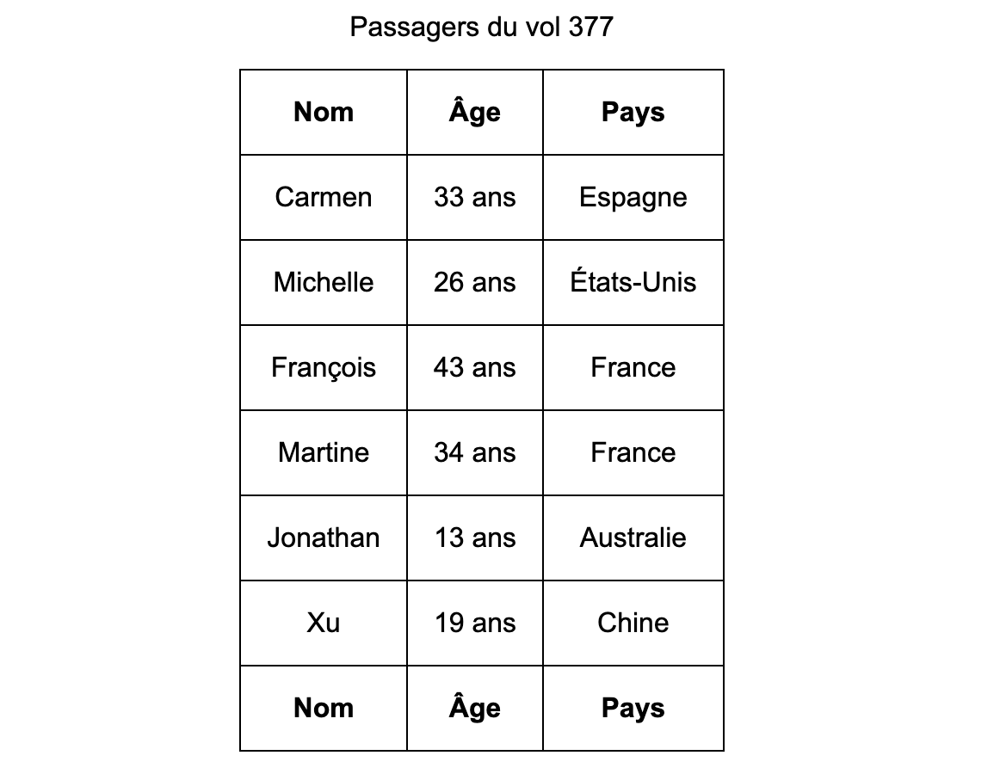
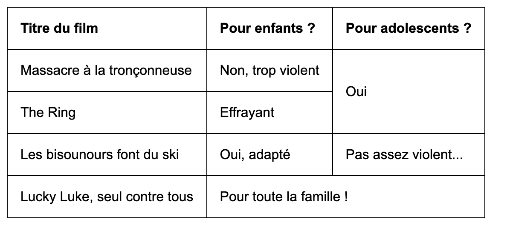

La balise en paire <table> </table> indique le début et la fin d'un tableau. Cette balise est de type block , on va donc la placer en dehors d'un paragraphe ou d'une div.
Indiquez les valeurs du tableau avec les balises HTML <tr> et <td>
- <tr> </tr> indique le début et la fin d'une ligne du tableau
- <td> </td> indique le début et la fin du contenu d'une cellule

On a une balise de ligne <tr> qui englobe un groupe de cellules <td>.
Par exemple, si je veux faire un tableau à deux lignes, avec trois cellules par ligne (donc trois colonnes), je devrai taper ceci :
Le résultat est un peu déprimant :
On peut embellir le résultat avec du CSS mais continuons sans CSS.
La ligne d'en-tête se crée avec un <tr> mais les cellules qu'elle contient sont, cette fois, encadrées par des balises <th> (pour table header ou "en-tête de tableau" en français) et non pas <td>
La ligne d'en-tête est très facile à reconnaître pour deux raisons:
- Les cellules sont des <th>au lieu des <td> habituels
- C'est la première ligne du tableau
Normalement, chaque tableau devrait être accompagné d'un titre. Le titre du tableau permet d'informer rapidement le visiteur sur le contenu et le contexte du tableau. Dans notre exemple, nous présentons une liste de personnes... Sans titre de tableau, il est facile de se sentir perdu.
Heureusement, la balise <caption> vient à notre secours pour ajouter un titre à notre tableau!
Cette balise doit être placée au début du tableau, juste avant l'en-tête. Son contenu correspond au titre que vous souhaitez attribuer au tableau.
Divisez un tableau avec les balises HTML thead, tbody et tfoot
Si votre tableau est assez gros, vous aurez tout intérêt à le découper en plusieurs parties. Pour cela, il existe des balises HTML qui permettent de définir les trois “zones” du tableau:
- L'en-tête du tableau (en haut) se définit avec les balises <thead> </thead>
- Le corps du tableau (au centre) se définit avec les balises <tbody> </tbody>
- Le pied du tableau (en bas) se définit avec les balises <tfoot> </tfoot>
Vous pouvez par exemple y mettre un résumé, ou un total. Le pied de tableau se mettra, comme l'en-tête, par défaut, en gras:
Dans cet exemple de tableau, il peut sembler redondant de mettre le même contenu dans l'en-tête et le pied du tableau. Cependant, cette pratique peut s'avérer utile lorsque le tableau est très long.
Lorsqu'un tableau contient un grand nombre de lignes et que l'utilisateur fait défiler la page pour le parcourir, il peut être pratique de répéter le contenu de l'en-tête dans le pied du tableau. Ainsi, lorsque l'utilisateur atteint la fin du tableau, il peut facilement visualiser les informations clés de chaque colonne sans avoir à remonter vers l'en-tête.
Cette répétition de contenu facilite la consultation du tableau et permet de garder une vue d'ensemble, même lorsque l'utilisateur se trouve loin de l'en-tête. Cependant, il est important de noter que cette pratique peut augmenter la taille du tableau et nécessite une attention particulière pour maintenir la cohérence des données entre l'en-tête et le pied du tableau.
Fusionnez des cellules du tableau avec les attributs colspan et rowspan
Pour fusionner des cellules entre elles, il suffit d'ajouter un attribut dans la balise HTML <td>. Cela permet d'indiquer le nombre de cellules à fusionner entre elles (la balise des cellules).
II existe deux attributs pour deux types de fusions différentes:
- L'attribut colspan permet de fusionner des colonnes: la fusion s'effectue horizontalement, aussi bien sur les lignes d'en-tête que sur le contenu lui-même.
- L'attribut rowspan permet de fusionner des lignes: là, deux lignes seront groupées entre elles. La fusion s'effectuera verticalement.
Voyons tout de suite à quoi cela peut ressembler:
